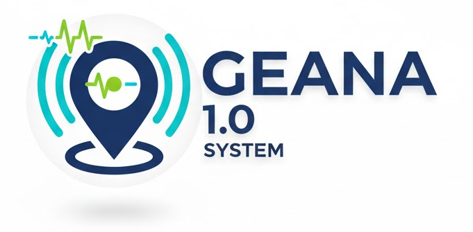
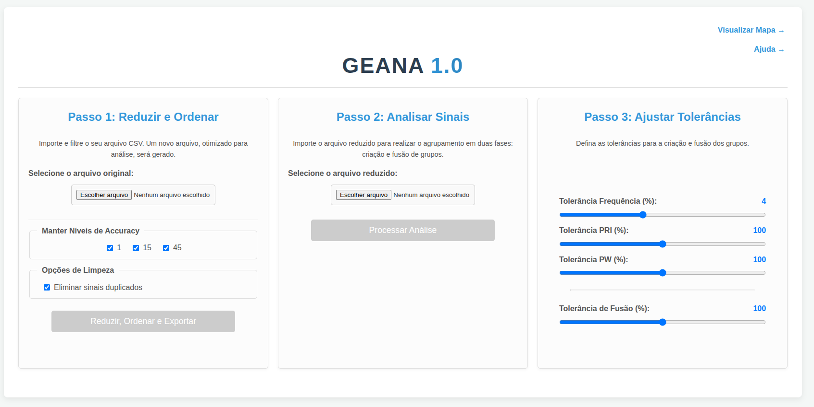
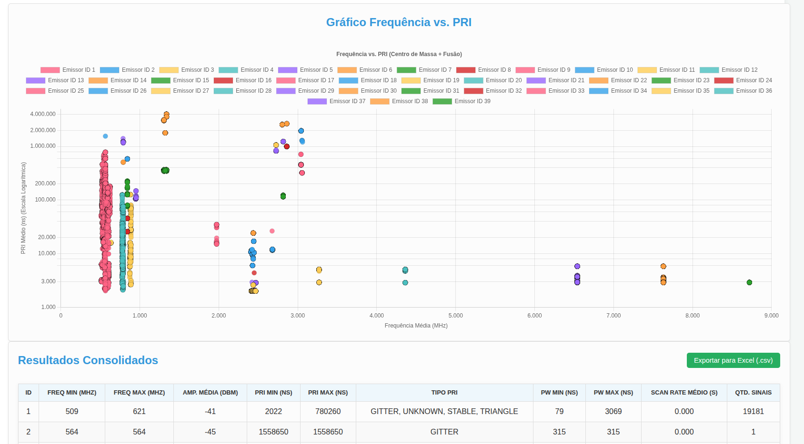
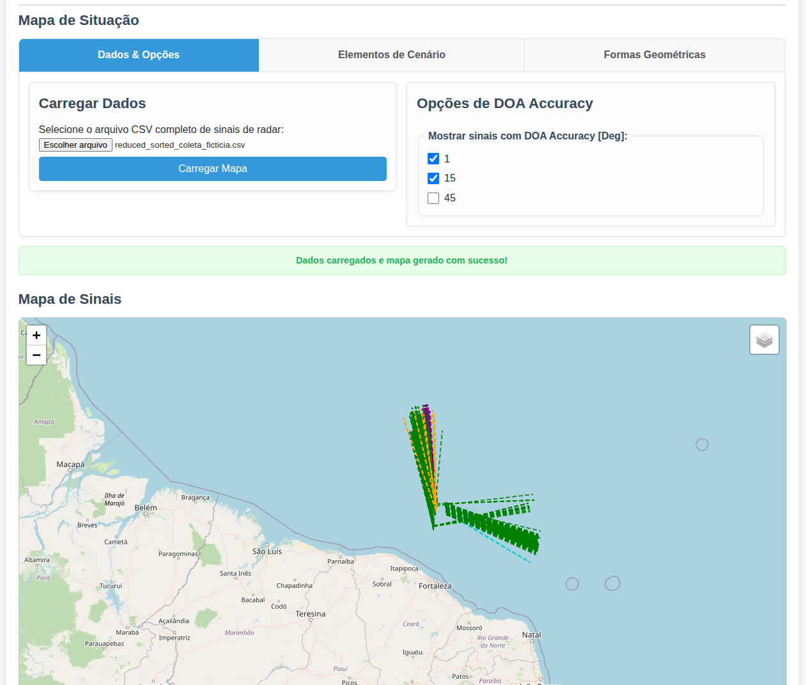
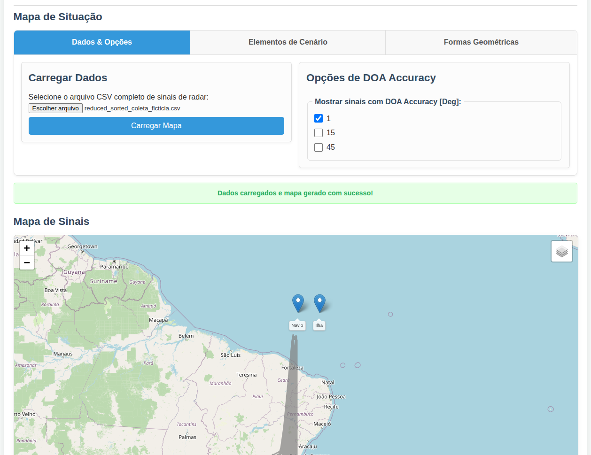

Sistema Avançado de Análise de Sinais de Guerra Eletrônica
O GEANA (Analisador de Sinais de Guerra Eletrônica) é uma ferramenta web de alta performance projetada para processar grandes volumes de dados de sinais de radar. Seu principal objetivo é identificar e agrupar sinais semelhantes em "emissores" distintos, permitindo uma análise detalhada de suas características e comportamento tático.
Com uma interface intuitiva, o sistema simplifica o fluxo de trabalho em três etapas essenciais: pré-processamento de dados brutos, parametrização da análise e visualização estratégica dos resultados.
Limpeza e otimização do arquivo CSV original. Filtragem por acurácia, remoção de duplicatas e ordenação inteligente para máxima performance.
Algoritmo de clustering avançado. Criação de grupos baseados em "centro de massa" e fusão inteligente de grupos próximos.
Controle fino sobre o algoritmo. Ajuste as tolerâncias de Frequência, PRI, PW e Fusão para se adequar perfeitamente aos seus dados.

Interface de configuração e processamento.
Visualize a distribuição dos sinais com gráficos de dispersão (Frequência vs. PRI). Identifique padrões rapidamente com codificação de cores por emissor.
Acesse um resumo completo das características de cada emissor (Freq, PRI, PW, Amplitude). Exporte os dados processados para Excel com um clique.

Visualização gráfica dos sinais processados.
O sistema projeta as informações processadas em um mapa tático, exibindo a localização estimada dos emissores e objetos de cenário para uma compreensão geográfica completa.

